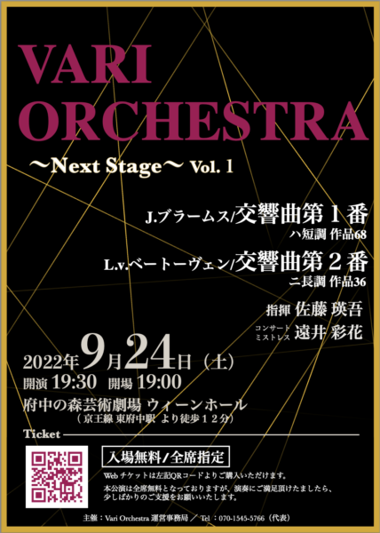
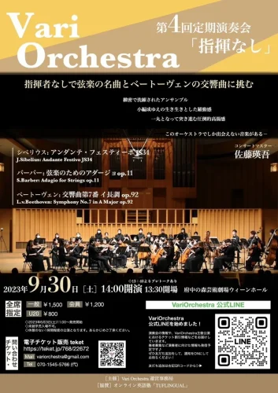
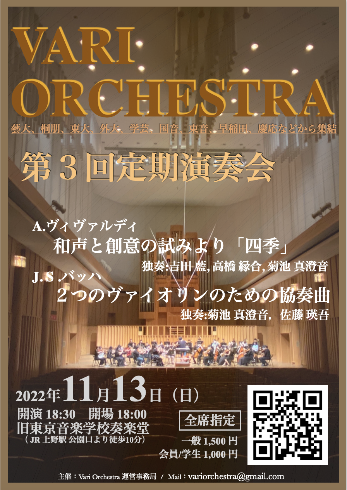
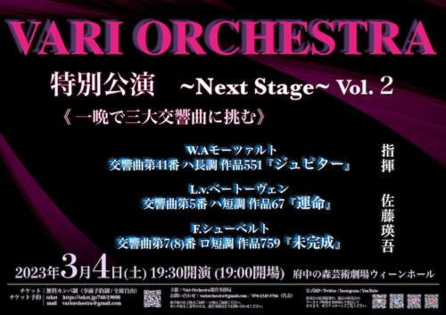
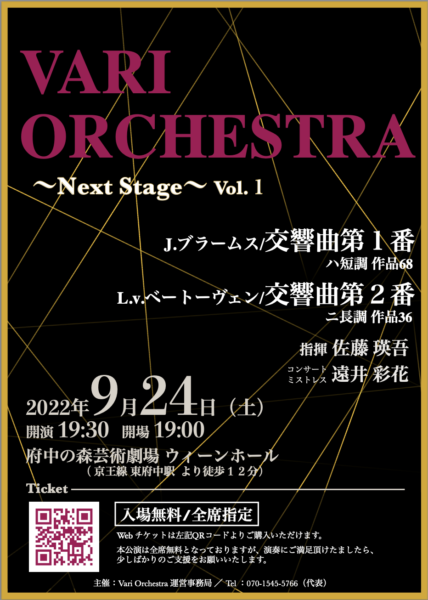
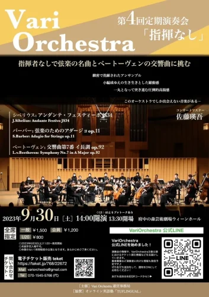
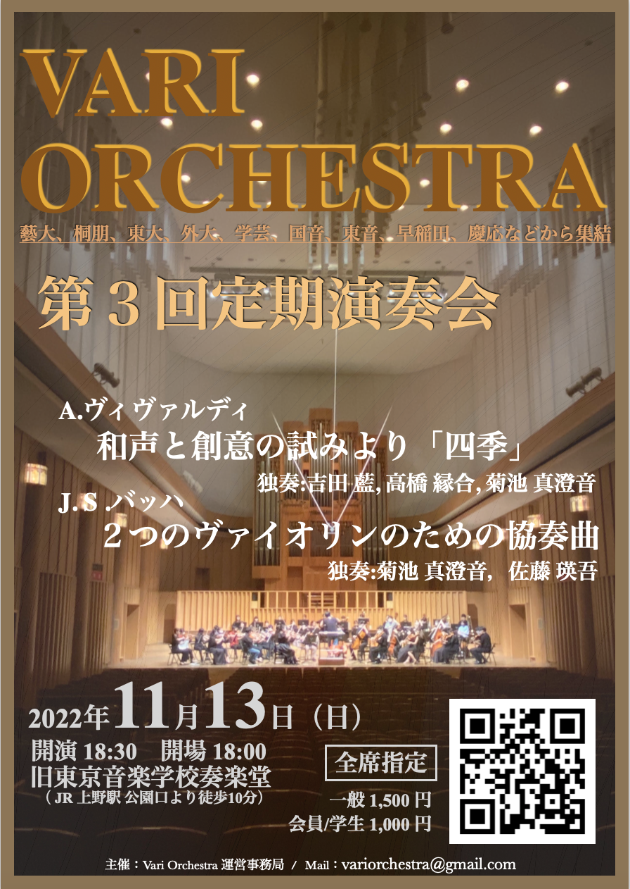
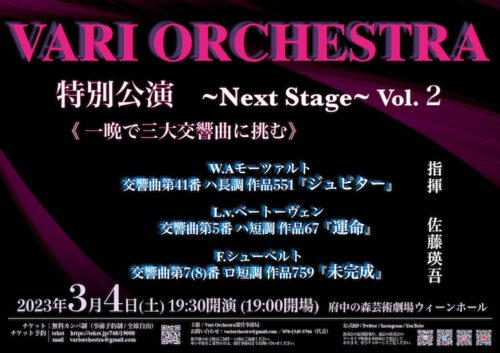

佐藤 瑛吾
Violinist & Conductor
プロフィール

学歴
東京外国語大学国際日本学部卒業。東京音楽大学指揮研修生修了。
経歴
4歳でヴァイオリンを始め…（略）
主な受賞歴
- Bach International Music Competition UK2024 第1位（指揮部門）
- Max Bruch International Competition2024 Platinum Prize（指揮部門）
- 2nd Gabriel faure music World Competition 第1位(指揮部門)
- 2025年ベルギー国際オペラ指揮者コンクール出場
VariOrchestra設立と活動
2020年、都内の音楽大学出身者を中心に呼びかけ…（略）
その他の活動
中高生のオーケストラの指導や…（略）
師事歴
ヴァイオリンを伊藤亮太郎、有働一美、大塚杏奈、白瀬ゆりの各氏に、指揮を増井信貴氏に師事。

 






